原文连接:https://www.cnblogs.com/guohai-stronger/p/12005216.html
今天我们进入逆向开发中另一个部分--越狱知识的讲解。如果你对此篇博客有所期待，说明你很可能已经在iPhone越狱上有所研究啦。阅读本篇博客可能花费大家20分钟-30分钟,请大家耐心阅读,会有所收获!!!
概述
人们对于iPhone手机越狱有很多不同的诉求，有的是因为开发软件需要开放的平台，有的控制欲较强需要对iPhone设备全部控制的需求，有的是需要安装私人的iPhone应用。
1.1 定义原理
越狱(jailBreak)通过iOS系统的安全启动链的漏洞，禁止掉信任链条中的负责验证的组件，从而拿到iOS系统中的最大权限Root权限
当启动iOS设备时，系统首先从只读的ROM中读取初始化的指令--系统的引导程序，其中引导ROM包括了苹果官方授权的公钥，会验证底层的启动器LLB的签名，一旦通过了此次验证，就会启动系统。LLB会做一些基础性的工作，进一步验证第二级引导程序iBoot。当iBoot启动之后，设备就可以进入到了恢复模式或者启动内核。在iBoot验证之后内核签名也合法性之后，整个的启动程序开始进入到了正规：加载驱动的程序、检测到设备、启动系统来守护进程。其中整个信任链会确保所有的系统组件都是由苹果的官方写入、分发、签名，不能够来自第三方机构。下面是一个过程图帮助大家理解：
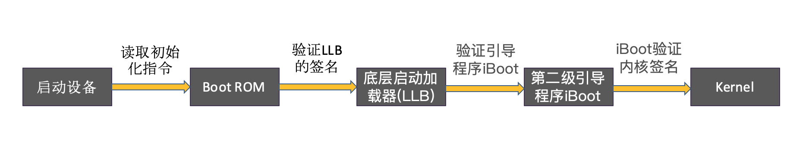
越狱的工作原理就是攻击这一信任链。越狱工具的所有作者都需要找到信任链上的漏洞，进一步禁止信任链负责验证的组件，最后拿到系统最大权限Root权限来完成越狱。
1.2 分类
越狱分为完美越狱和非完美越狱之分。
- 完美越狱：破解iOS系统漏洞后，系统每次重启都会自动调用注入的恶意代码，达到破坏安全信任链的验证，从而拿到Root权限。
- 非完美越狱：当越狱系统之后，并没有完全的破解掉安全链认证，导致部分信息和功能的应用不佳。例如关机后必须要越狱软件来引导开机……这样越狱就叫做“不完美越狱”
1.3 安装插件
最好手机是iPhone 5s对应的系统是iOS 9.0，因为是最稳定的。
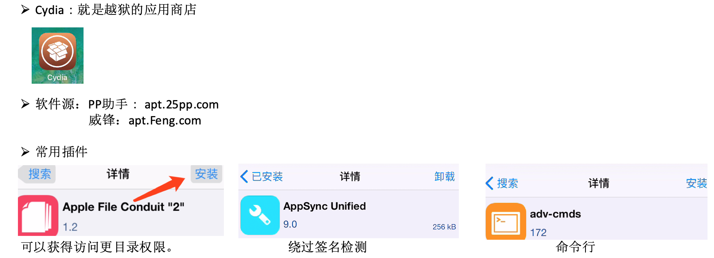
OpenSSH与USB连接
2.1 OpenSSH
2.1 概述
通过OpenSSH插件来连接手机，目的是远程控制或者传送文件。
连接手机使用Wifi连接手机，ssh 用户名@手机的IP地址 例如$ssh root@192.168.21.133
默认的密码是alpine
iOS下有两个用户：Root、Mobile
- Root用户：最高权限的用户，可以访问任何文件包括Mobile用户的权限
- Mobile用户：普通用户，只能访问该用户目录下的文件/var/Mobile
修改账户登录密码
- Root用户可以修改所有用户的密码
- $passwd命令来修改密码
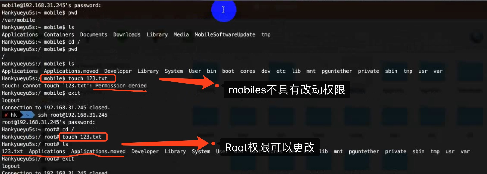
2.2 OpenSSH与SSH
OpenSSH是SSH(Secure Shee)协议的免费开源的实现。SSH协议可以用来远程控制或者在计算机之间来传送文件。
- SSH是一种网络协议，目的是用于计算机之间的加密登录，由芬兰学者设计SSH协议，将登录信息全部加密，成为了互联网安全的一个基本解决方案，目前成为了Linux的标准配置。
- OpenSSH 是一款软件，应用也是非常广泛。
下面是SSH登录过程：
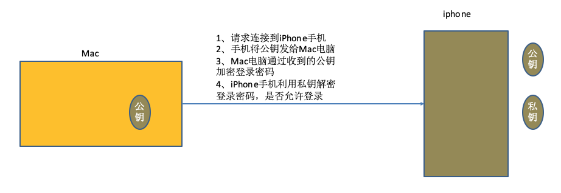
- 中间人攻击：上面登录过程存在一种隐患，如果有人冒犯服务器，将生成的虚假公钥发送给客户端，那么它将获得客户端连接服务器的密码。
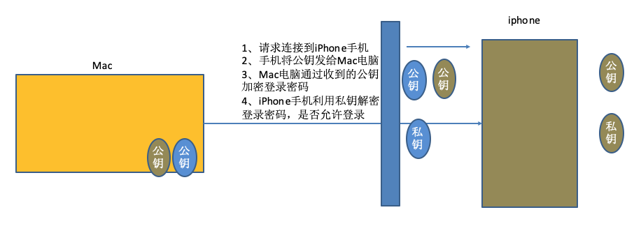对于SSH其他操作命令如下图
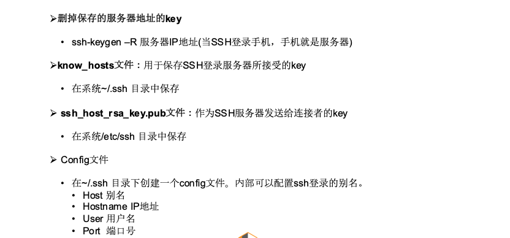
如果对于SSH权限操作，每次都要输入密码用户名比较麻烦如下图：
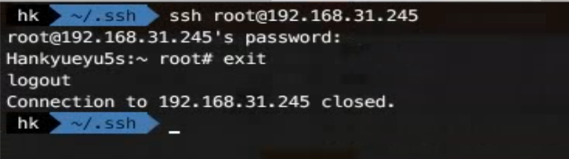
免密码登录也称为“公钥登录”，原理是用户将自己的公钥存储在远程主机上。登录的时候，远程主机会向用户手机发送一段随机字符串，用户用自己的私钥加密后，然后再发回来。远程主机用事先存储的公钥进行解密，如果成功了，证明用户是可信的，直接允许登录，不要再求发送密码
查看是否保存公钥私钥密码，并删除原本的密码，用于公钥存储起来
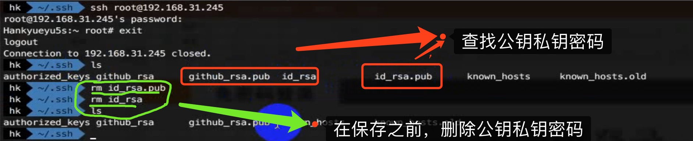
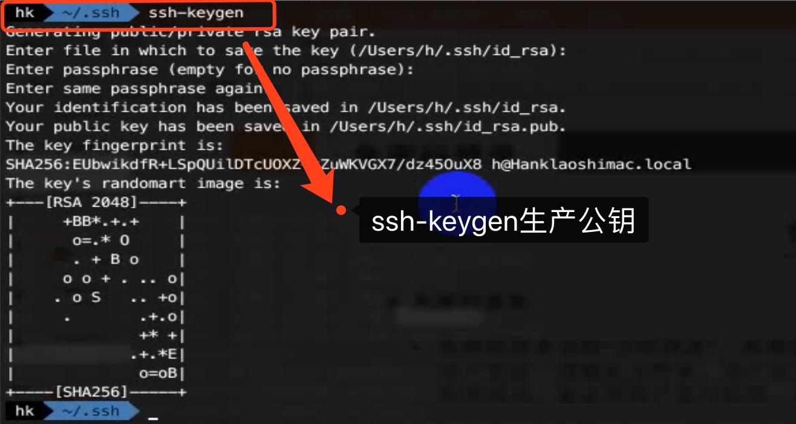

最终查看结果，完美实现，不需要再次输入密码
- cofig文件配置SSH登录的别名
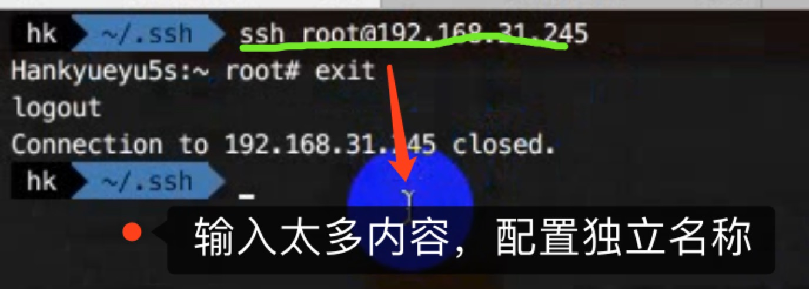
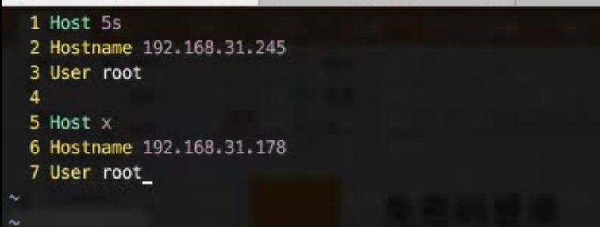
2.2 USB连接
苹果有个服务，叫做usbmuxd,这个服务主要用于在USB协议上实现TCP连接。
对于USB连接，有如下命令
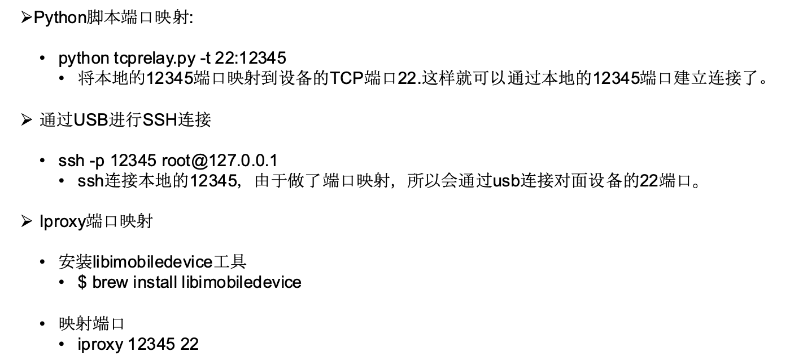
对于一些操作，需要将电脑文件拷贝到手机，通过指令
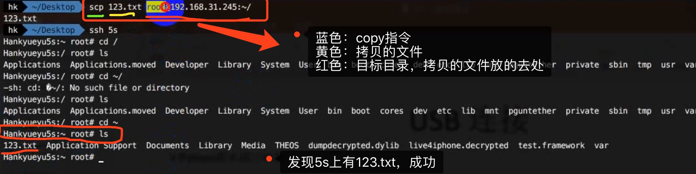
砸壳+IDA分析
2.1 砸壳
砸壳--软件脱壳：是对软件加壳的逆操作，把软件上的壳去掉（解密）
应用砸壳（加密）：提交给AppStore的app，都是经过官方保护而加密的，这样就可以保证在AppStore里面下载的应用都是经过苹果审核授权的。经过AppStore加密的应用无法通过Hopper等反编译静态分析，也没有办法Class-dump。逆向开发中需要对加密的二进制文件进行解密才可以做静态分析，这个过程就是砸壳（脱壳）
应用砸壳（解密）：
- 静态砸壳：是在已经都掌握和了解到了壳应用的加密算法以及逻辑后在不运行壳应用程序的前提下将程序进行解密。静态砸壳难度是比较大，而且加密发现应用被破解之后可能会更改用更高级和复杂的加密技术。
- 动态砸壳：是从运行在进程内存空间中的可执行程序映像image入手，将内存中的内容进行转储（dump）处理来实现砸壳技术。这种相对简单点，并且不需要关心使用哪一种加密技术。
2.2 砸壳技术
AppStore的应用使用到了FairPlay DRM数字版权保护加密技术。
FairPlay保护的文件具有加密容器文件，其使用AES进行加密，解密所需要的主密钥也是以加密的方式存储在容器当中。解密主密钥所需要的密钥称之为“用户密钥”。如果当用户使用iTunes登录新设备时，设备紧接着向Apple服务器请求版权，最后获得用户密钥。在试图使用文件时，存储在文件当中的主密钥随后与用户密钥匹配，如果成功了就允许使用，反之不允许使用。
2.2.1 Clutch砸壳--技术方案1
如果我们从AppStore下载的应用在IDA分析之前,需要对ipa进行破壳解密, 使用Clutch, 其原理是在应用运行时把内存数据按照一定的格式来导出,其实质就是去除数字化认证的过程.
步骤1: 下载Clutch
有两种方式: 1 可执行文件 2. 工程需要编译从而获得可执行文件
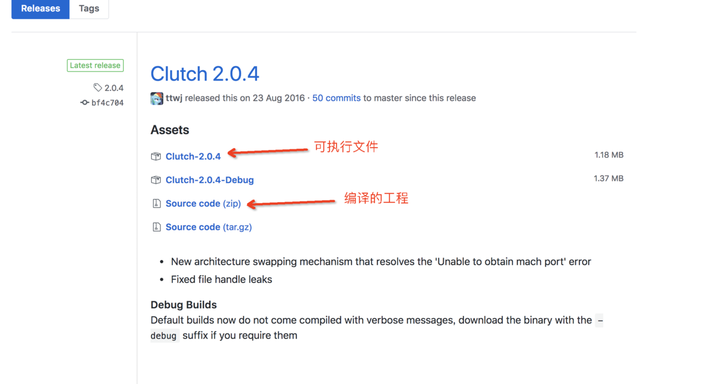
步骤2: 下载PP助手,用越狱的手机连接Mac电脑,打开工具->文件管理->系统->usr->bin 将可执行文件放到bin目录下
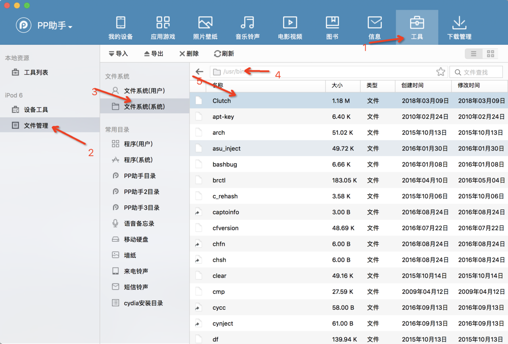
步骤3: 打开越狱手机的cydia,下载Open SSH,越狱的手机和电脑在同一wifi,得到ip地址为192.168.2.10
步骤4: 打开终端:
- 输入ssh root @192.168.2.10,输入完成之后,输入密码,密码默认都是alpine,如果不是,需要删除OpenSSH重新来安装
- 密码输入正确之后, cd到可执行文件放在手机中的位置cd /usr/bin
- 给Clutch加权限防止权限不够chmod a+x Clutch
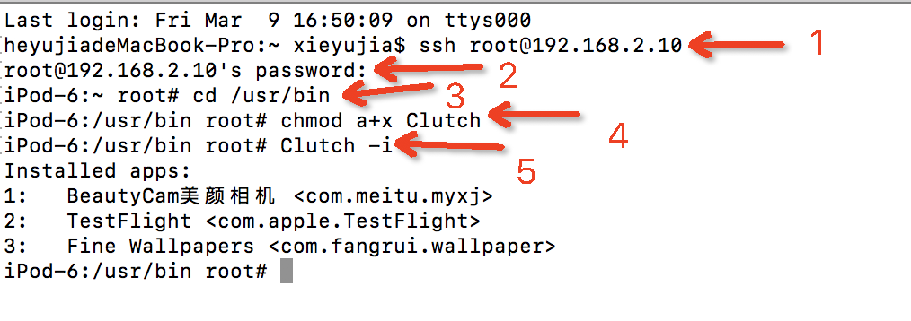
步骤5: 终端输入Clutch -d 1, 如果要砸壳其他应用,选择对应的id, 然后将破解的包导出来
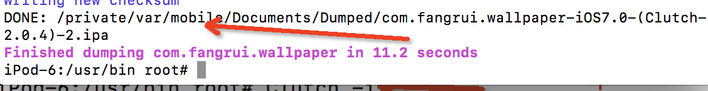
2.2.2 class-dump+ cycript + dumpdecrypted--技术方案2
步骤1: 下载class-dump
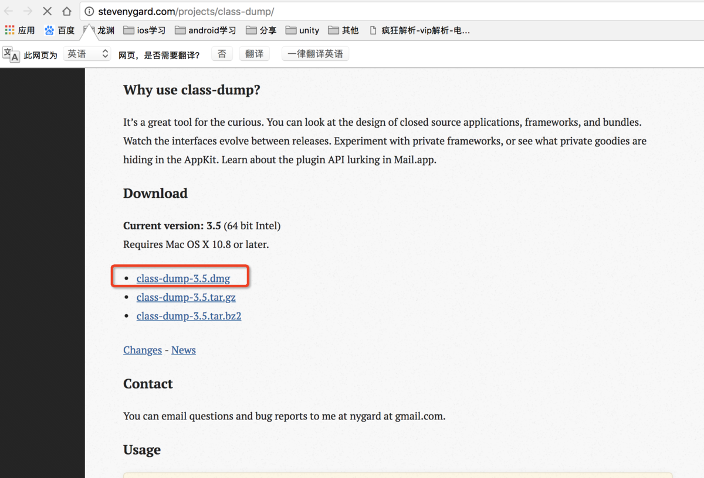
步骤2: 将双击下载好的class-dump-3.5.dmg,复制其中的
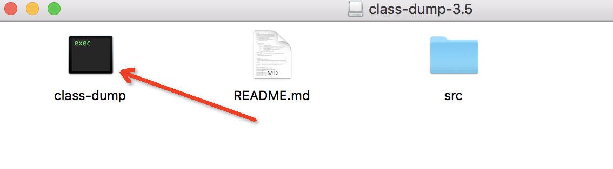
步骤3: 在Finder选择前往->前往文件夹->/usr/local/sbin/进入目录, 将class-dump放进去

步骤4: 给class-dump赋予执行条件sudo chmod 777 /usr/local/sbin/class-dump
步骤5: 下载dumpdecrypted,然后cd到解压到目录下, 输入make,会编译出dumpdecrypted.o和dumpdecrypted.dylib
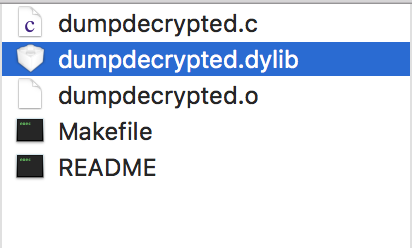
步骤6: 用到dumpdecrypted.dylib,开始砸壳,终端用ssh连接越狱手机
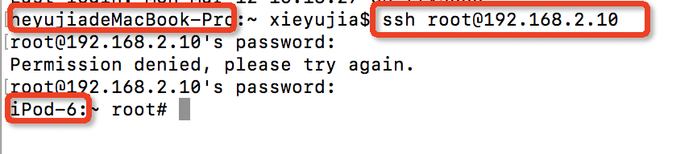
步骤7: 查看当前设备运行的进程, 连接好之后,终端输入ps -e
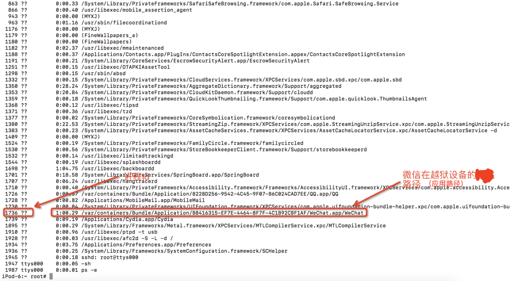
步骤8: 找到要砸壳的应用后, 记录进程id和应用路径,终端输入cycript -p 进程id,等待直到出现cy#后,输入命令,打出沙盒路径,如下
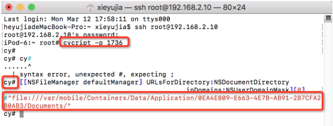
步骤9: 保存好沙盒路和应用路径(沙盒路径不是应用路径,沙盒路径有Document),将下载好的dumpdecrypted.dylib放到沙盒路径中
//在终端中输入下面代码，记住scp 后的第一部分是你放在电脑中的dumpdecrypted.dylib的路径 第二部分是步骤5记录的应用沙盒地址，请替换成自己的
scp /Users/xieyujia/Desktop/ios/逆向工程/dumpdecrypted-master/dumpdecrypted.dylib root@192.168.2.10:/var/mobile/Containers/Data/Application/0EA4E809-E663-4E7B-AB91-2B7CFA2B0AB3/Documents/步骤10: 将dumpdecrypted.dylib放到沙盒路径,重新连接ssh,然后cd到砸壳应用路径
//后面的路径是应用路径 而不是沙盒路径
DYLD_INSERT_LIBRARIES=dumpdecrypted.dylib /var/containers/Bundle/Application/B8416315-EF7E-4464-8F7F-4C1B92CBF1AF/WeChat.app/WeChat等待执行完之后,可以看到Document下生成了个.decrypted文件----这是破解后的可执行的文件.
利用PP助手找到对应的.decrypted文件,导出到电脑中.
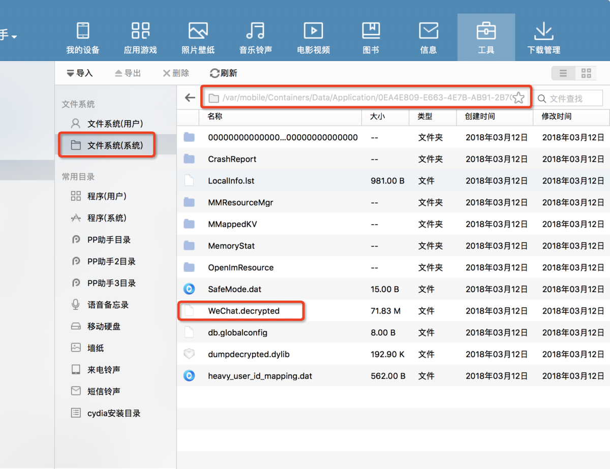
步骤11: 用class-dump破解里面代码, 输入
//第一个路径是.decrypted文件的路径，第二个路径是导出.h文件的路径
class-dump -H /Users/xieyujia/Desktop/ios/逆向工程/WeChat.decrypted -o /Users/xieyujia/Desktop/ios/逆向工程/head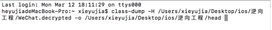
步骤12: 没有app没有上传到appStore就不会被加密, 就不需要砸壳, 可以将.decrypted路径改为.app路径
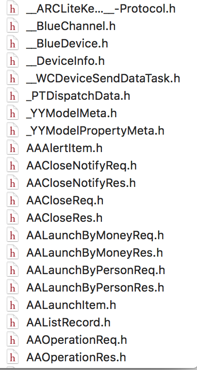
2.3 IDA工具静态分析
2.3.1 需要下载IDA工具
大家可以去下载破解版本: https://pan.baidu.com/s/1ulQ-svw4n3i2bbV-4Fhyqg#list/path=%2F, 密码为5sm3
2.3.2 下载完之后,解压文件
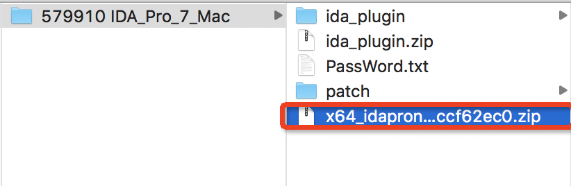
2.3.3 使用64位版本,点击new,选择要分析的应用
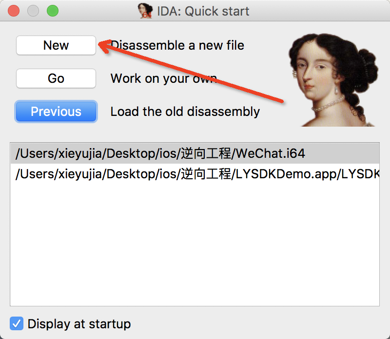

我们就可以通过上面来查看源码
Theos及Tweak
Theos是越狱开发的一个工具包, 可以创建Tweak项目,动态的hook第三方程序
github位置https://github.com/theos/theos
3.1 Theos
3.1.1 安装
步骤1: 安装依赖库
安装Theos之前要首先安装dpkg、fakeroot和ldid三个依赖库
$ brew install ldid fakeroot
$ brew install --from-bottle https://raw.githubusercontent.com/Homebrew/homebrew-core/7a4dabfc1a2acd9f01a1670fde4f0094c4fb6ffa/Formula/dpkg.rb
$ brew pin dpkg步骤2: 在/opt目录下,clone项目源码
git clone --recursive https://github.com/theos/theos.git步骤3: 下载之后修改theos权限
sudo chown -R $(id -u):$(id -g) theos 步骤4: 修改环境变量
打开 ~/.bash_profile文件，添加两行代码
export THEOS=/opt/theos
export PATH=/opt/theos/bin/:$PATH完成配置后,查看是否成功
➜ theos git:(master) ✗ echo $THEOS
/opt/theos拓展: 如果安装过了omyzsh,可能上面配置不成功
加下面一行代码
source ～/.bash_profile3.2 Tweak及工作原理
Cydia Substrate 是越狱后cydia插件/软件(指theos开发的tweak)运行的基础依赖库. 它提供了软件运行公开库,用于动态替换内存的代码.所以首先要安装好Cydia Substrate.
Cydia Substrate包括了MobileHooker, MobileLoader以及safe mode部分
1. MobileHooker
MobileHooker 是用来覆盖并替换系统的方法,也就是前面说的挂钩(Hooking)
主要有以下两个函数
void MSHookMessageEx(Class class, SEL selector, IMP replacement, IMP *result);
void MSHookFunction(voidfunction,void replacement,void** p_original);MSHookMessageEx是作用于Objective-C函数
MSHookFunction作用于C和C++函数
2. MobileLoader
MobileLoader是将Tweak插件注入到第三方的应用程序中
启动的时候,MobileLoader根据/Library/MobileSubstrate/DynamicLibraries/目录下的plist文件所指定的范围内,有范围通过dlopen函数加载同名的dylib
.plist文件的作用也就是指定tweak插件的作用对象
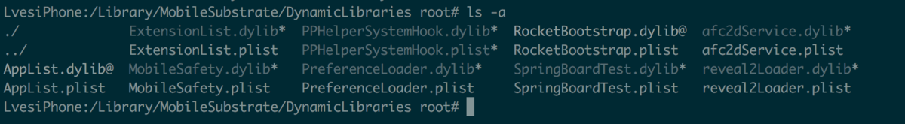
3. safe mode
- 在appStore下载的程序参差不齐,tweak的本质在于dylib, 寄生在别人程序的进程里面
- Cydia Substrate 引入了safe mode(安全模式) 在安全模式下所有的第三方dylib(基于Cydia Substrate的)都会遭到禁用, 这样就会有利于查找错误,进行修复
逆向攻防调试
4.1 Reveal
Reveal是一个特别强大的UI分析工具, 通过它可以很直观的查看app页面的UI布局.
安装Reveal: http://revealapp.com、
调试过程
步骤1: 打开软件Reveal, 找libReveal.dylib以及Reveal.framework
步骤2: 执行copy Reveal.framework到越狱手机上
scp -r /Users/apple/Desktop/Reveal.framework root@192.168.2.2:/System/Library/Frameworks步骤3: 执行copy libReveal.dylib到越狱的手机上
scp -r /Users/apple/Desktop/libReveal.plist root@192.168.2.2:/Library/MobileSubstrate/DynamicLibraries/步骤4: 本地创建libReveal.plist,编辑文件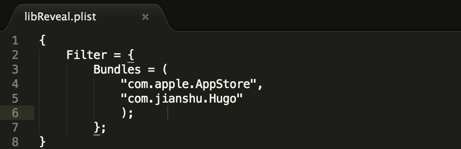
copy libReveal.plist文件到越狱手机中
scp -r /Users/apple/Desktop/libReveal.plist root@192.168.2.2:/Library/MobileSubstrate/DynamicLibraries/步骤5: 重新启动手机,打开jianshu app
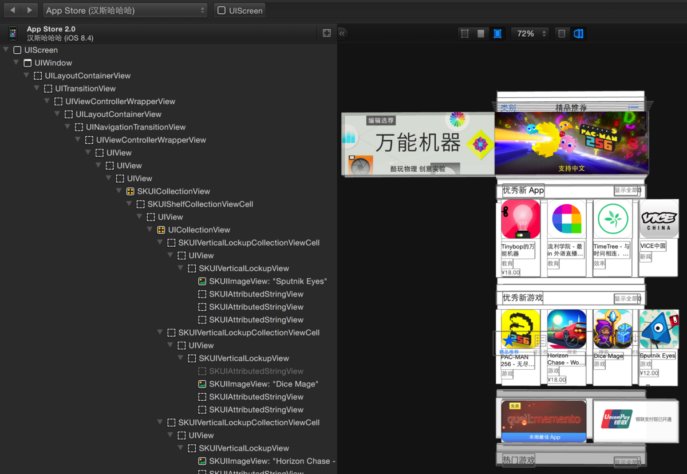
通过此软件怎么找到app里面的Bundle identifier呢?
步骤1: 连接越狱手机后,打开终端:输入
cd /private/var/mobile/Containers/Bundle/Application步骤2: 查看所有app的资源文件: ls
步骤3: 右建应用程序,显示包内容,找到可执行文件

步骤4: 查找资源文件名
find . -name 'Hugo*'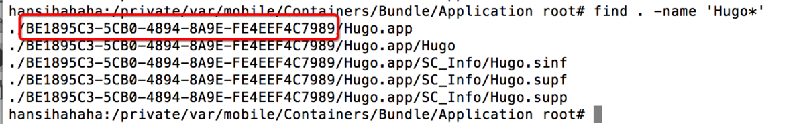
找到名为红色内容
步骤5: 进入IFile(Cydia里面有)
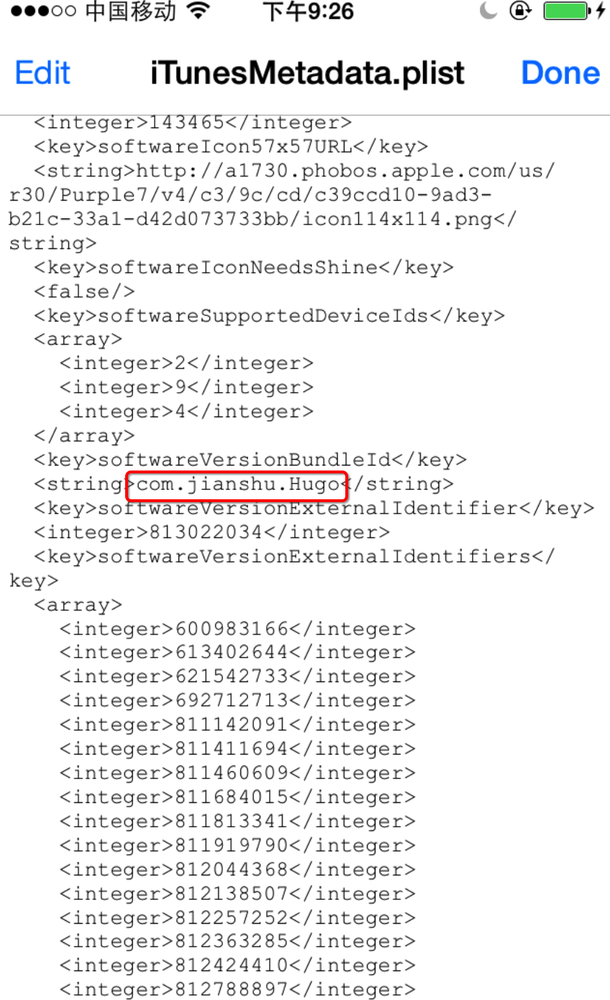
红色内容即为要找的东西.
4.2 DebugServer
4.2.1 debugSever
debugSever运行在iOS程序中,默认是位于Developer/usr/bin目录下
debugSever给app瘦身
lipo -thin arm64（这里对应你的iOS设备的结构） (未经处理的debugServer的路径) -output (新的debugserver的保存路径)首先会根据你自己的iOS设备确定手机对应的ARM 5s以上的手机都是arm64
4.2.2 debugSever使用
启动进程,开启port端口
debugserver backend ip:port /path/to/excutable附加进程
debugserver ip:port -a "processname"4.3 LLDB手动砸壳
步骤1: 开启debugSever,并且依附到微信App进程,port = 12346
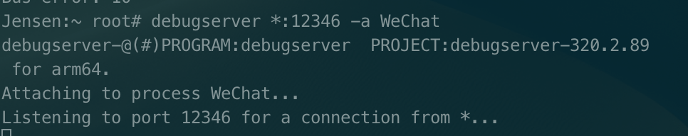
步骤2: Mac电脑映射本地port12346到手机12346
步骤3: Mac电脑进入LLDB状态下, 通过debugSever
process connect connect://127.0.0.1:12346步骤4: 然后去找到MachO收地址,通过image list
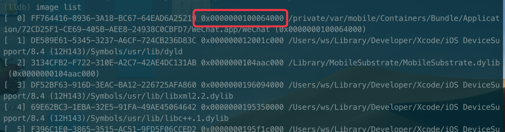
步骤5: 利用otool -l来工具查看MachO文件
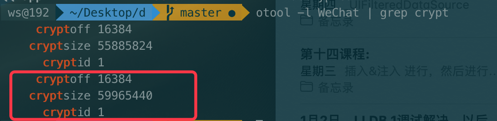
从上面可以看出,MachO文件是加密的(cryptid = 1), 从cryptoff开始加密,大小为cryptsize
步骤6: 利用memory read读出加密
Memory read —force —outfile ./decrypted.bin —binary —count xxx 内存地址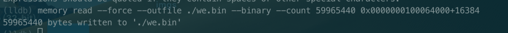
步骤7: 内存中的dump出来的文件进行写入原先加密的MachO文件上
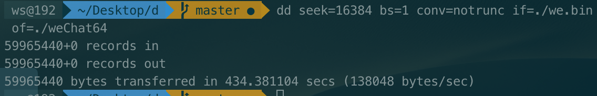
步骤8: 将cryptid = 1改为0
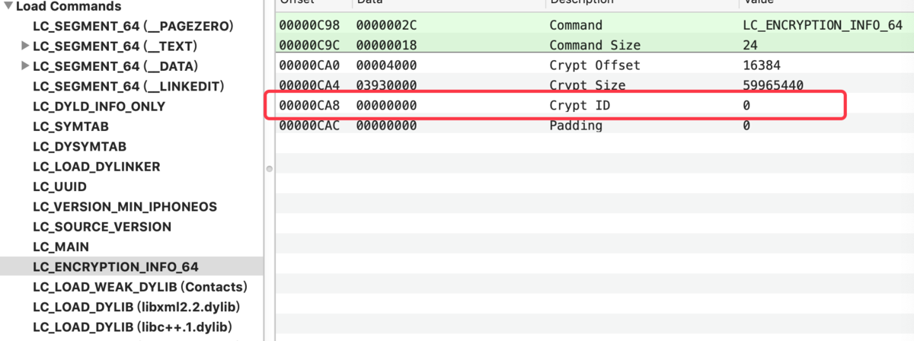
步骤9: 验证利用Classdump是否砸壳成功,如下图,成功砸壳
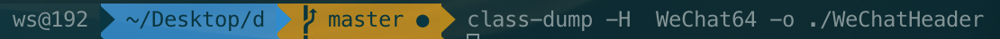
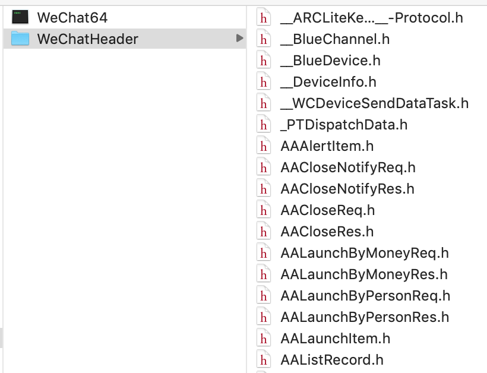
总结
今天讲述的内容非常多,都是关于越狱的知识讲解,以及用到的插件,希望大家认真的看此篇文章,相信会被大家理解iOS底层有一个全新的认识,谢谢大家!!!